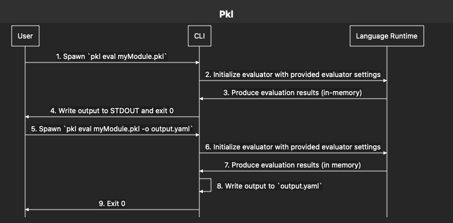

Threat Model
Last edited: 2026-06-08
This document describes the threat model for the Pkl project. It is intended to help security researchers and reporters understand what we consider to be within scope and assess whether a potential vulnerability is relevant to Pkl’s security goals. For information on how to report a vulnerability, see Security.
What we are working on
Pkl is a programming language meant for generating configuration data. It is either a binary executable that runs on a machine, or a library that gets embedded into another runtime.
The Pkl language is:
-
Idempotent (the same input always produces the same output)
-
Declarative
-
Short-lived (a program is designed to run to completion)
-
Note: the language is turing complete. We address the halting problem via timeouts.
-
-
Lazy (only expressions in the critical path of the program’s output are evaluated)
Alongside the main runtime, we also work on the suite of tooling that supports the language. The tooling includes:
-
Evaluator clients and bindings, like pkl-swift and pkl-go, rules_pkl, and pkl-spring.
-
IDE tooling and libraries, like pkl-intellij, pkl-vscode, and pkl-lsp.
-
Meta tooling for Pkl, like pkl-parser, tree-sitter-pkl, pkl-doc, and pkl-textmate.
-
Libraries written in Pkl, like pkl-pantry and pkl-k8s.
-
Libraries that extend Pkl’s I/O capabilities, in pkl-readers.
The tools and languages are available as open-source repositories on GitHub. The list grows over time, and is available here: https://github.com/apple/pkl#pkl-github-repositories.
In addition to our open-source repositories, we also maintain:
-
https://pkl-lang.org - This website.
-
https://pkg.pkl-lang.org - A redirect server used for Pkl packages.
Glossary
- Allowlist
-
A list of regular expression patterns configured by the Evaluator Client that controls which URIs the Language Runtime may access. Separate allowlists exist for modules (
import) and resources (read). - Cache directory
-
A local directory (default:
~/.pkl/cache) where the runtime stores downloaded package contents. Configurable via--cache-dir. - CLI
-
The
pklcommand-line executable. A standalone binary that acts as an Evaluator Client. - Evaluator Client
-
Software that configures evaluator settings and invokes the Language Runtime. Either the
pklCLI or a language binding library (Java, Go, Swift, Kotlin, etc.). - External Reader
-
A process that handles a custom URI scheme on behalf of the Language Runtime. Registered by the Evaluator Client; communicates with the runtime via a message-passing protocol over stdio.
- I/O
-
Input/Output — any operation that reads from or writes to an external resource (filesystem, network, environment variables, etc.).
- Language Runtime
-
The Pkl evaluator. Receives an entrypoint module and evaluator settings, evaluates the module, and returns output.
- Module
-
A single Pkl source file (
.pkl). The basic unit of Pkl code. - Package
-
A versioned, addressable collection of Pkl modules, identified by a URI (e.g.,
package://pkg.pkl-lang.org/pkl/pkl-config@1.0.0). Package contents are integrity-verified by SHA-256 checksum (see Package Integrity). - pkg.pkl-lang.org
-
A redirect server operated by the Pkl team that resolves
package:URIs to their canonical hosting location (e.g., GitHub Releases). - pkl-lsp
-
The Pkl Language Server, implementing the Language Server Protocol. Used by IDE plugins to provide editor features such as completions and diagnostics.
- pkl-pantry
-
A collection of first-party Pkl packages maintained by the Pkl team.
- pkl-readers
-
A library of first-party external reader implementations that extend Pkl’s built-in I/O with custom URI schemes.
- PklProject
-
A file that defines project-level configuration for a Pkl codebase, including package metadata, package dependencies, and evaluator settings.
- PklProject.deps.json
-
The dependency list, generated by
pkl project resolve. Contains resolved versions and SHA-256 checksums for all declared package dependencies. - Root directory
-
A filesystem boundary configured via
--root-dirthat restrictsfile:reads to files within that path.It does not affect package caching, external readers, or CLI behaviors such as loading of settings.pkl, PklProject/PklProject.deps.json, and multiple file output.
System Description
The Pkl system is composed of the following:
Components
- Language Runtime
-
The Pkl language runtime itself. Inert until invoked; only evaluates the entrypoint and its transitive dependencies.
- Evaluator Client
-
Configures evaluator settings and invokes the runtime. Either a standalone CLI (
pkl) or as a library (Java, Go, Swift, Kotlin, Gradle, Bazel). - Pkl Libraries
-
Libraries written in Pkl, executed within the language runtime. They inherit the I/O permissions of the enclosing evaluation.
- IDE Tooling
-
Plugins and tooling that run within the context of a user’s source code editor. Operates with the user’s full filesystem access and may invoke the Language Runtime.
External Actors
- User
-
A person or system that invokes the Evaluator Client. Includes developers running the CLI directly, CI/CD pipelines, and applications embedding a Pkl library.
- Package Author
-
An entity that publishes a Pkl package to a registry. Distinct from a User because they supply modules that other evaluations may transitively import.
- Package Server
-
An external system that hosts and serves packages consumed by Pkl (e.g., pkg.pkl-lang.org, or an arbitrary HTTPS endpoint).
- External Resource
-
Any external data source read by Pkl via
readorimport(e.g., HTTPS endpoints, local filesystem, environment variables). Not a human actor, but a source of untrusted input. - Publish Pipelines
-
The GitHub Actions pipelines that publish artifacts.
The following diagram demonstrates the flow of a common use-case, where the CLI is used to produce configuration output. This demonstrates two commands executed by the User, producing different results.

Boundaries
Execution-time
-
User → Evaluator Client: The User configures what the runtime is permitted to do — allowed modules, readers, and external resources. All runtime I/O permissions are established here; Pkl code cannot exceed them.
-
Evaluator Client → Language Runtime: The client invokes the runtime with a fixed set of evaluator settings. The runtime must enforce those settings; Pkl code must not be able to override or escape them.
-
Language Runtime → External Resource: During evaluation, the runtime may read external resources via
readorimport, gated by evaluator settings. -
Pkl module → Pkl module: A module that imports another module cannot grant it more trust than it has itself. For example, a module imported from HTTPS cannot transitively import a module from the local filesystem.
Package resolution
-
Language Runtime / IDE Tooling → Package Server: When fetching a package, the runtime or IDE tooling contacts a package server over HTTPS. pkg.pkl-lang.org is a redirect server — it does not serve packages directly, but redirects to the canonical host (e.g., GitHub Releases). Package integrity is verified by checksum regardless of which server ultimately serves the content.
Supply chain
-
Publish Pipelines → Registries: GitHub Actions pipelines hold the credentials and signing keys used to publish artifacts to Maven Central, GitHub Releases, and NPM. Compromise of the pipeline or its credentials could result in malicious artifacts published under the Pkl team’s identity.
IDE tooling
-
IDE Tooling → Language Runtime: The IntelliJ plugin and pkl-lsp invoke the Language Runtime to evaluate Pkl files open in the editor. This runs with the user’s full filesystem access and operates on potentially untrusted files (e.g., from third-party repositories).
Pkl’s I/O Permission Model
The Language Runtime enforces I/O permissions set by the Evaluator Client before evaluation begins. No Pkl code can modify these settings at runtime.
Allowlists
The Evaluator Client configures two allowlists:
-
Allowed modules - regular expression patterns controlling which modules may be imported via
import. -
Allowed resources - regular expression patterns controlling which resources may be read via
read.
If a read or import expression resolves to a URI that does not match the corresponding allowlist, the runtime throws an error rather than performing I/O.
URI Schemes
Pkl identifies all resources and modules by URI. The scheme determines what kind of I/O is performed.
The Pkl evaluator provides the following schemes baked-in:
| Scheme | Description |
|---|---|
|
Local filesystem access. Controlled by the allowed modules/resources allowlists. |
|
Remote resource fetched over HTTP(S). Controlled by the allowed modules/resources allowlists. |
|
A Pkl package, resolved either via HTTPS or file system. Integrity is verified by checksum (see Package Integrity). |
|
Built-in Pkl standard library modules. Always available; not subject to allowlist restrictions. |
|
Environment variable. Controlled by the allowed resources allowlist. |
|
External property. Controlled by the allowed resources allowlist. |
|
A set of directories or zip files, as specified by the modulepath setting. Controlled by the allowed modules/resources allowlists. |
In addition to these, Pkl can understand other schemes by:
-
Custom readers - a custom reader tells Pkl what its scheme is, and how it performs I/O. The custom reader can either be implemented directly in the host runtime, or as an external process.
-
(JVM only) Generic URL - When Pkl is run in the JVM, it can read generic URLs that Java’s
java.net.URLAPI understands.
File system reads
In addition to the allowlist controls, the import and read operators can only read files that exist inside the configured --root-dir.
| By default, the CLI does not set a root dir, and the entire file system is available to read. |
One exception to this rule is: package imports will read files from within the --cache-dir.
File system writes
Pkl can write to the specified --cache-dir, or defaulting to ~/.pkl/cache, unless the --no-cache option is specified.
Outside the language runtime, our tooling also writes files to the file system.
For example, the CLI writes to the file system based on the command and flags set, as documented by https://pkl-lang.org/main/current/pkl-cli/index.html#usage.
Custom Readers
The Evaluator Client may register custom readers that handle custom URI schemes not natively supported by the runtime or overload built-in URI schemes.
A custom reader can either be:
-
A direct API call from Pkl to the host language, when Pkl is embedded.
-
An external reader, an external process that is spawned.
A compromised custom reader can run malicious code within the permissions of the OS process.
Package Integrity
When downloading a package, the runtime verifies the package’s contents against a SHA-256 checksum. This happens in one of three ways:
-
The package is a remote project dependency, and its checksum is stored inside the PklProject.deps.json file.
When the project is resolved, the checksum is observed and recorded. This implies "trust on first use" semantics.
-
The package is a remote project dependency, and its checksum is declared inside the PklProject file.
When the project is resolved, the package’s checksum is verified.
PklProjectamends "pkl:Project" dependencies { ["pkg"] { uri = "package://example.com/pkg@1.0.0" checksums { sha256 = "abc123" } } } -
The package is a direct import, and its checksum is inside the import URI string. For example:
import "package://example.com/pkg@1.0.0::sha256:abc123#/myMod.pkl"
This verification is independent of which server served the package, providing integrity guarantees even if the package server is compromised or the connection is intercepted.
| The runtime does not verify the checksum of packages inside the cache dir; this type of attack is out of scope. |
One exception to this is direct package imports that lack a sha256 checksum segment.
The following import does not verify package integrity:
import "package://example.com/pkg@1.0.0#/myModule.pkl"Transitivity
Allowlists apply transitively.
A module imported from HTTPS may only read resources permitted by the enclosing evaluation’s allowlist — it cannot grant access to resources outside that allowlist.
For example, a remote module cannot read from the local filesystem unless file: URIs are explicitly permitted.
Assets
Pkl publications are distributed to the following locations:
-
Maven Central
-
Pkl’s Java libraries
-
Pkl’s CLIs
-
pkl-lsp
-
-
GitHub Releases
-
Pkl’s CLIs
-
pkl-lsp
-
IntelliJ plugin
-
VSCode plugin
-
Pkl packages (libraries written in Pkl)
-
-
NPM
-
Pkl’s JavaScript libraries, including tree-sitter-pkl
-
Publishing happens using GitHub Actions.
Security Goals
-
Pkl cannot perform I/O outside what is explicitly allowed.
-
Pkl code cannot modify or exceed the permissions established by the Evaluator Client.
-
Pkl cannot execute arbitrary system commands or load native code.
-
Pkl will run to completion, or time out.
-
The CLI only writes to filesystem locations as documented for each command.
-
Published artifacts are authentic.
-
Imported package dependencies are authentic.
-
Sandboxing flags allow un-trusted Pkl code to be executed safely.
-
Note: we do not achieve this goal today (see Resource Exhaustion).
-
Attacker Profiles
- Remote Attacker
-
An external party with no special access. Can interact with public-facing services, submit Pkl code to any publicly-accessible evaluator, and craft malicious inputs.
- Malicious Module Author
-
An attacker who can supply Pkl modules that run within other users' evaluations, either by publishing a package or contributing to a dependency. Their code runs with the I/O permissions of the enclosing evaluation.
- Network Attacker
-
An attacker who can intercept traffic between the Pkl runtime and external services. A passive network attacker can observe but not modify traffic (blocked by TLS). An active network attacker can perform DNS hijacking or man-in-the-middle if they can compromise TLS.
- Compromised Insider
-
An attacker who has obtained the Pkl team’s CI/CD access or publishing credentials, whether through account compromise or social engineering. Can publish artifacts under the Pkl team’s identity.
Threats
Language Runtime
I/O Sandbox Escape
A crafted Pkl program exploits a bug in the language runtime to perform I/O outside the allowlists established by the Evaluator Client.
This could allow a Pkl module to read files outside --root-dir, access network endpoints not in the allowed list, or read environment variables the caller did not intend to expose.
Attacker: Remote Attacker; Malicious Module Author
Violates: Pkl cannot perform I/O outside what is explicitly allowed
Allowlist Bypass via Crafted URI
A crafted URI causes an allowlist regex to match more broadly than the operator intended.
For example, a pattern meant to allow https://example.com/ also matches https://example.com.evil.com/ due to a missing anchor.
The runtime is the last line of defense against such gaps.
Attacker: Remote Attacker; Malicious Module Author
Violates: Pkl cannot perform I/O outside what is explicitly allowed
Arbitrary Code Execution
A crafted Pkl program exploits a memory-safety bug or other vulnerability in the runtime to execute arbitrary native code within the host process.
Attacker: Remote Attacker; Malicious Module Author
Violates: Pkl cannot execute arbitrary system commands or load native code
Resource Exhaustion
A crafted Pkl program exhausts CPU and/or memory resources on the host machine.
| Pkl currently does not have sandbox flags that limit CPU/memory usage. Users that wish to guard against resource exhaustion attacks must rely on external means, e.g. running within a hypervisor. |
Attacker: Malicious Module Author
Violates: Sandboxing flags allows un-trusted Pkl code to be executed safely
Cache Poisoning
A bug in the runtime causes valid cached packages to be overwritten with malicious content.
Attacker: Malicious Module Author
Violates: Imported package dependencies are authentic
Package Resolution
Tampered Package
A malicious or compromised Package Server serves a modified version of a Pkl package. If the import URI does not include a SHA-256 checksum segment, the runtime performs no integrity verification and Pkl code within the tampered package is evaluated.
Package imports that include a checksum in the URI are verified against the declared hash.
Direct imports without a checksum (e.g., package://example.com/pkg@1.0.0#/mod.pkl) are not verified.
Attacker: Network Attacker
Violates: Imported package dependencies are authentic
Supply Chain
Compromised Publish Pipeline
A compromised GitHub Actions pipeline or stolen registry credentials allows an attacker to publish a malicious artifact under the Pkl team’s identity to Maven Central, GitHub Releases, or NPM. Downstream users would receive and trust the malicious artifact.
Attacker: Compromised Insider
Violates: Published artifacts are authentic
pkg.pkl-lang.org Compromise
The pkg.pkl-lang.org redirect server is compromised, or its DNS is hijacked, causing package resolution requests to be redirected to attacker-controlled servers. Users whose package imports do not include checksums would fetch and execute malicious packages without any verification failure.
Attacker: Remote Attacker; Network Attacker
Violates: Imported package dependencies are authentic
IDE Tooling
Arbitrary Code Execution
A crafted Pkl program exploits a memory-safety bug or other vulnerability to execute arbitrary code within the IDE’s process.
Attacker: Malicious Module Author
Violates: Pkl cannot execute arbitrary system commands or load native code
Out of Scope
The following are real risks but are outside the Pkl team’s control and are not threats we can mitigate directly.
- Third-party infrastructure
-
The Pkl supply chain relies on GitHub (source hosting and CI/CD), Maven Central, NPM, and GitHub Releases as trusted third-party services. The security of these platforms is governed by their respective operators.
- Underlying runtime vulnerabilities
-
Pkl runs on top of GraalVM, the JVM, the Go runtime, or the Swift runtime depending on the embedding.
Any vulnerabilities in these runtimes must be fixed by their respective owners.
- Operating system and hardware
-
Attacks that require local access to the machine running Pkl, OS kernel vulnerabilities, or hardware-level attacks.
- Insecure Evaluator Client configurations
-
A User who configures overly broad evaluator permissions while executing un-trusted Pkl code. Some examples:
-
Allowing reads of
env:resources. -
Not configuring a root dir.
-
- Malicious external readers
-
External readers are executables that run directly on a user’s machine. If a User downloads and configures the evaluator to run a malicious external reader, they are vulnerable to whatever the external reader is programmed to do.